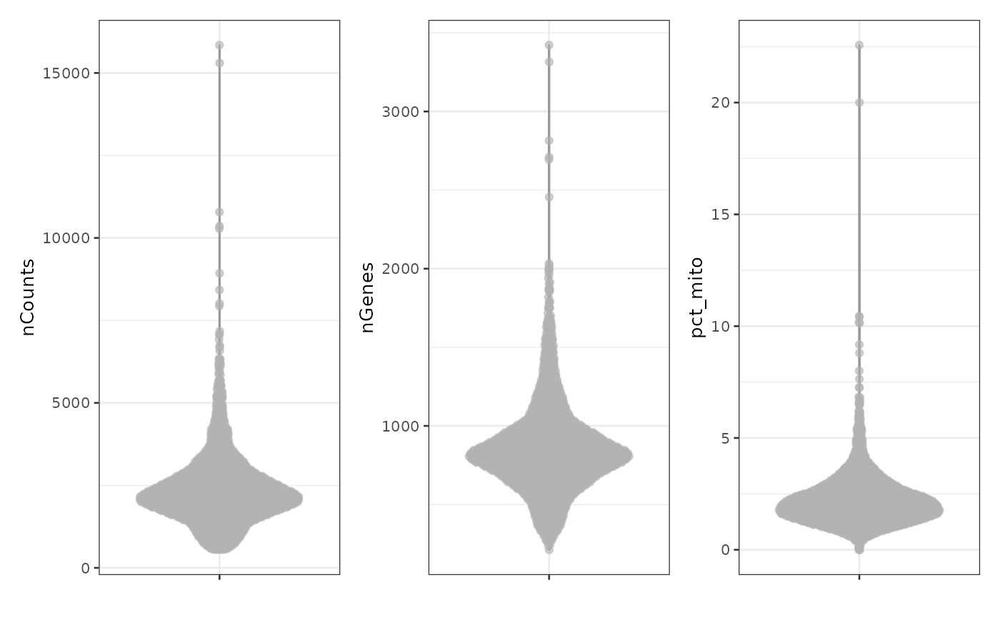
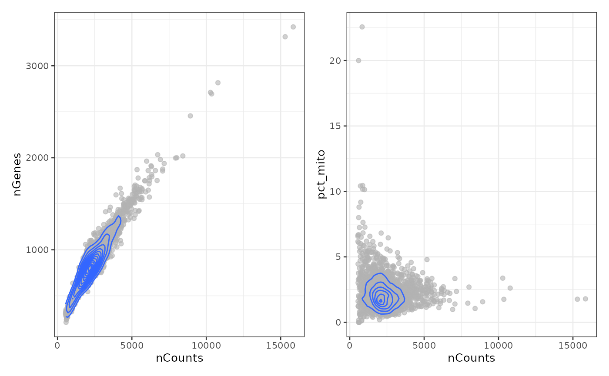
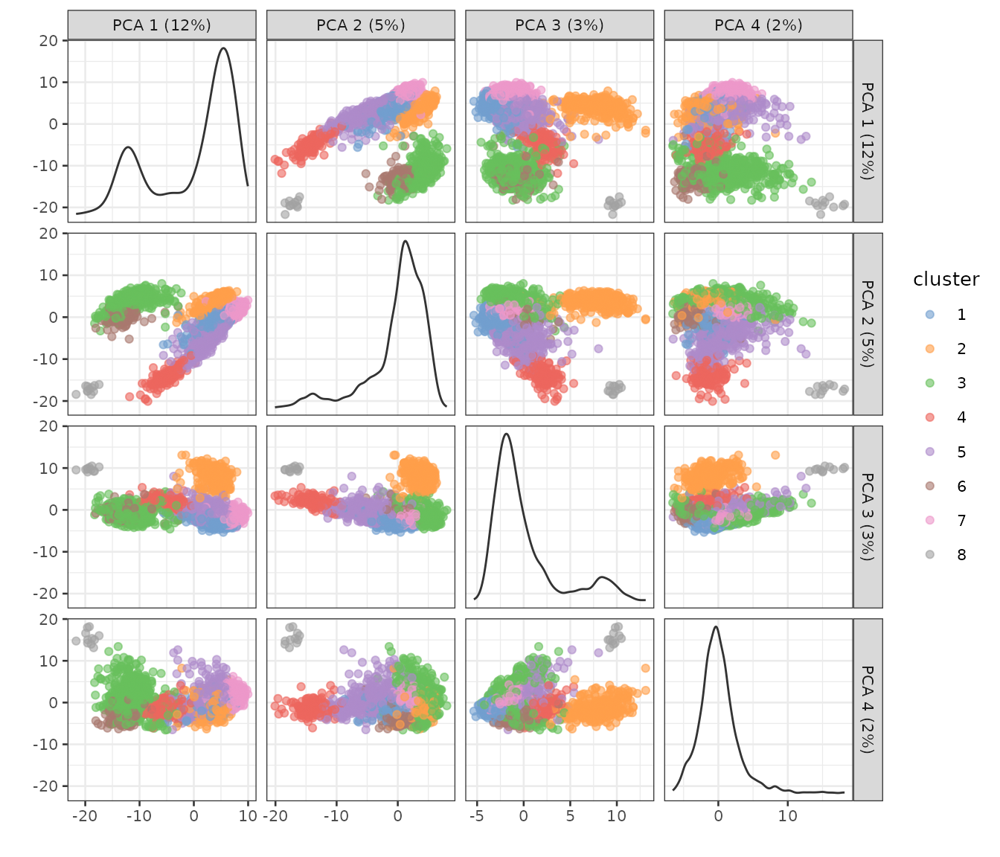
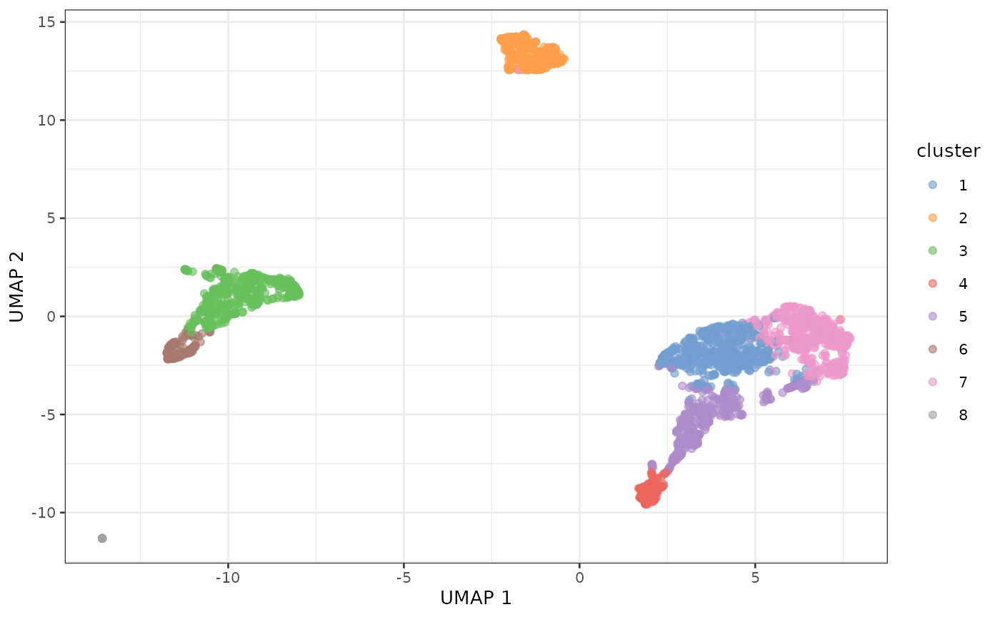

Using concordex in to assess cluster boundaries in scRNA-seq
Lambda Moses, Kayla Jackson
Jul 22, 2024
Source:vignettes/concordex-nonspatial.Rmd
concordex-nonspatial.RmdIntroduction
UMAP is commonly used in scRNA-seq data analysis as a visualization
tool projecting high dimensional data onto 2 dimensions to visualize
cell clustering. However, UMAP is prone to showing spurious clustering
and distorting distances (Chari, Banerjee, and
Pachter 2021). Moreover, UMAP shows clustering that seems to
correspond to graph-based clusters from Louvain and Leiden because the k
nearest neighbor graph is used in both clustering and UMAP. We have
developed concordex as a quantitative alternative to UMAP
cluster visualization without the misleading problems of UMAP. This
package is the R implementation of the original Python command line
tool.
In a nutshell, concordex finds the proportion of cells
among the k-nearest neighbors of each cell with the same cluster or
label as the cell itself. This is computed across all labels and the
average of all labels is returned as a metric that indicates the quality
of clustering. If the clustering separates cells well, then the observed
similarity matrix should be diagonal dominant.
Preprocessing
In this vignette, we demonstrate the usage of concordex
on a human peripheral blood mononuclear cells (PBMC) scRNA-seq dataset
from 10X Genomics. The data is loaded as a
SingleCellExperiment object.
sce <- TENxPBMCData("pbmc3k")
#> see ?TENxPBMCData and browseVignettes('TENxPBMCData') for documentation
#> downloading 1 resources
#> retrieving 1 resource
#> loading from cacheHere we plot the standard QC metrics: total number of UMIs detected
per cell (nCounts), number of genes detected
(nGenes), and percentage of UMIs from mitochondrially
encoded genes (pct_mito).
sce$nCounts <- colSums(counts(sce))
sce$nGenes <- colSums(counts(sce) > 0)
mito_inds <- grepl("^MT-", rowData(sce)$Symbol_TENx)
sce$pct_mito <- colSums(counts(sce)[mito_inds,])/sce$nCounts * 100
plotColData(sce, "nCounts") +
plotColData(sce, "nGenes") +
plotColData(sce, "pct_mito")
p1 <- plotColData(sce, x = "nCounts", y = "nGenes") +
geom_density2d()
p2 <- plotColData(sce, x = "nCounts", y = "pct_mito") +
geom_density2d()
p1 + p2
Remove the outliers and cells with high percentage of mitochondrial counts as the high percentage is not expected biologically from the cell type:
Then normalize the data:
sce <- logNormCounts(sce)Graph based clustering in PCA space
For simplicity, the top 500 highly variable genes are used to perform PCA:
sce <- runPCA(sce, ncomponents = 30, ntop = 500, scale = TRUE)See the number of PCs to use later from the elbow plot:
plot(attr(reducedDim(sce, "PCA"), "percentVar"), ylab = "Percentage of variance explained")Percentage of variance explained drops sharply from PC1 to PC5, and
definitely levels off after PC10, so we use the top 10 PCs for
clustering here. The graph based Leiden clustering uses a k nearest
neighbor graph. For demonstration here, we use k = 10.
set.seed(29)
sce$cluster <- clusterRows(reducedDim(sce, "PCA")[,seq_len(10)],
NNGraphParam(k = 10, cluster.fun = "leiden",
cluster.args = list(
objective_function = "modularity"
)))See what the clusters look like in PCA space:
plotPCA(sce, color_by = "cluster", ncomponents = 4)
#> Warning in data.frame(gg1$all, df_to_plot[, -reddim_cols]): row names were
#> found from a short variable and have been discarded
Some of the clusters seem well-separated along the first 4 PCs.
Since UMAP is commonly used to visualize the clusters, we plot UMAP
here although we don’t recommend UMAP because it’s prone to showing
spurious clusters and distorting distances. UMAP also uses a k nearest
neighbor graph, and we use the same k = 10 here:
sce <- runUMAP(sce, dimred = "PCA", n_dimred = 10, n_neighbors = 10)
plotUMAP(sce, color_by = "cluster")
For the most part, the clusters are clearly separated on UMAP.
Enter concordex
Since UMAP is prone to showing spurious clusters, we’ll see what the
concordex metric says about the clustering and whether it
agrees with UMAP visualization. Here we explicitly obtain the k nearest
neighbor graph, as clustering and UMAP above did not store the graph
itself.
g <- findKNN(reducedDim(sce, "PCA")[,seq_len(10)], k = 10)The result here is a list of two n (number of cell) by
k matrices. The first is the indices of each cell’s
neighbors, as in an adjacency list that can be matrix here due to the
fixed number of neighbors, and the second is the distances between each
cell and its neighbors. For concordex, only the first
matrix is relevant. An adjacency matrix, either sparse of dense, as
stored in the Seurat object, can also be used. Here the
cluster labels are permuted 100 times.
res <- calculateConcordex(
sce,
labels="cluster",
use.dimred="PCA",
compute_similarity=TRUE
)Here the argument compute_similarity indicates that we
concordex will return the cluster-cluster similarity matrix. The entries
in this matrix itself represent the proportion of cells with each label
in the neighborhood of other cells with the same label.
sim <- attr(res, "similarity")
round(sim, 2)
#> 1 2 3 4 5 6 7 8 9
#> 1 0.71 0.00 0.00 0.00 0.03 0.00 0.24 0.01 0.00
#> 2 0.01 0.98 0.00 0.00 0.00 0.00 0.01 0.00 0.00
#> 3 0.00 0.00 0.97 0.00 0.00 0.03 0.00 0.00 0.00
#> 4 0.00 0.00 0.00 0.94 0.06 0.00 0.00 0.00 0.00
#> 5 0.13 0.00 0.00 0.02 0.76 0.00 0.05 0.03 0.00
#> 6 0.00 0.00 0.07 0.00 0.00 0.93 0.00 0.00 0.00
#> 7 0.07 0.00 0.00 0.00 0.00 0.00 0.90 0.03 0.00
#> 8 0.06 0.00 0.00 0.00 0.02 0.00 0.50 0.42 0.00
#> 9 0.00 0.00 0.28 0.29 0.00 0.08 0.00 0.00 0.33Session info
sessionInfo()
#> R version 4.4.1 (2024-06-14)
#> Platform: x86_64-pc-linux-gnu
#> Running under: Ubuntu 22.04.4 LTS
#>
#> Matrix products: default
#> BLAS: /usr/lib/x86_64-linux-gnu/openblas-pthread/libblas.so.3
#> LAPACK: /usr/lib/x86_64-linux-gnu/openblas-pthread/libopenblasp-r0.3.20.so; LAPACK version 3.10.0
#>
#> locale:
#> [1] LC_CTYPE=C.UTF-8 LC_NUMERIC=C LC_TIME=C.UTF-8
#> [4] LC_COLLATE=C.UTF-8 LC_MONETARY=C.UTF-8 LC_MESSAGES=C.UTF-8
#> [7] LC_PAPER=C.UTF-8 LC_NAME=C LC_ADDRESS=C
#> [10] LC_TELEPHONE=C LC_MEASUREMENT=C.UTF-8 LC_IDENTIFICATION=C
#>
#> time zone: UTC
#> tzcode source: system (glibc)
#>
#> attached base packages:
#> [1] stats4 stats graphics grDevices utils datasets methods
#> [8] base
#>
#> other attached packages:
#> [1] patchwork_1.2.0 scater_1.32.0
#> [3] ggplot2_3.5.1 scuttle_1.14.0
#> [5] bluster_1.14.0 BiocNeighbors_1.22.0
#> [7] TENxPBMCData_1.22.0 HDF5Array_1.32.0
#> [9] rhdf5_2.48.0 DelayedArray_0.30.1
#> [11] SparseArray_1.4.8 S4Arrays_1.4.1
#> [13] abind_1.4-5 Matrix_1.7-0
#> [15] SingleCellExperiment_1.26.0 SummarizedExperiment_1.34.0
#> [17] Biobase_2.64.0 GenomicRanges_1.56.1
#> [19] GenomeInfoDb_1.40.1 IRanges_2.38.1
#> [21] S4Vectors_0.42.1 BiocGenerics_0.50.0
#> [23] MatrixGenerics_1.16.0 matrixStats_1.3.0
#> [25] concordexR_0.99.3 BiocStyle_2.32.1
#>
#> loaded via a namespace (and not attached):
#> [1] DBI_1.2.3 gridExtra_2.3
#> [3] rlang_1.1.4 magrittr_2.0.3
#> [5] compiler_4.4.1 RSQLite_2.3.7
#> [7] DelayedMatrixStats_1.26.0 png_0.1-8
#> [9] systemfonts_1.1.0 vctrs_0.6.5
#> [11] pkgconfig_2.0.3 SpatialExperiment_1.14.0
#> [13] crayon_1.5.3 fastmap_1.2.0
#> [15] dbplyr_2.5.0 magick_2.8.4
#> [17] XVector_0.44.0 labeling_0.4.3
#> [19] utf8_1.2.4 rmarkdown_2.27
#> [21] ggbeeswarm_0.7.2 UCSC.utils_1.0.0
#> [23] ragg_1.3.2 purrr_1.0.2
#> [25] bit_4.0.5 xfun_0.46
#> [27] zlibbioc_1.50.0 cachem_1.1.0
#> [29] beachmat_2.20.0 jsonlite_1.8.8
#> [31] blob_1.2.4 highr_0.11
#> [33] rhdf5filters_1.16.0 Rhdf5lib_1.26.0
#> [35] BiocParallel_1.38.0 irlba_2.3.5.1
#> [37] parallel_4.4.1 cluster_2.1.6
#> [39] R6_2.5.1 bslib_0.7.0
#> [41] jquerylib_0.1.4 Rcpp_1.0.13
#> [43] bookdown_0.40 knitr_1.48
#> [45] FNN_1.1.4 igraph_2.0.3
#> [47] tidyselect_1.2.1 viridis_0.6.5
#> [49] yaml_2.3.9 codetools_0.2-20
#> [51] curl_5.2.1 lattice_0.22-6
#> [53] tibble_3.2.1 withr_3.0.0
#> [55] KEGGREST_1.44.1 evaluate_0.24.0
#> [57] desc_1.4.3 isoband_0.2.7
#> [59] BiocFileCache_2.12.0 ExperimentHub_2.12.0
#> [61] Biostrings_2.72.1 pillar_1.9.0
#> [63] BiocManager_1.30.23 filelock_1.0.3
#> [65] generics_0.1.3 BiocVersion_3.19.1
#> [67] sparseMatrixStats_1.16.0 munsell_0.5.1
#> [69] scales_1.3.0 glue_1.7.0
#> [71] tools_4.4.1 AnnotationHub_3.12.0
#> [73] ScaledMatrix_1.12.0 fs_1.6.4
#> [75] grid_4.4.1 colorspace_2.1-0
#> [77] AnnotationDbi_1.66.0 GenomeInfoDbData_1.2.12
#> [79] beeswarm_0.4.0 BiocSingular_1.20.0
#> [81] vipor_0.4.7 rsvd_1.0.5
#> [83] cli_3.6.3 rappdirs_0.3.3
#> [85] textshaping_0.4.0 fansi_1.0.6
#> [87] viridisLite_0.4.2 dplyr_1.1.4
#> [89] uwot_0.2.2 gtable_0.3.5
#> [91] sass_0.4.9 digest_0.6.36
#> [93] ggrepel_0.9.5 farver_2.1.2
#> [95] rjson_0.2.21 htmlwidgets_1.6.4
#> [97] memoise_2.0.1 htmltools_0.5.8.1
#> [99] pkgdown_2.1.0 lifecycle_1.0.4
#> [101] httr_1.4.7 mime_0.12
#> [103] MASS_7.3-60.2 bit64_4.0.5